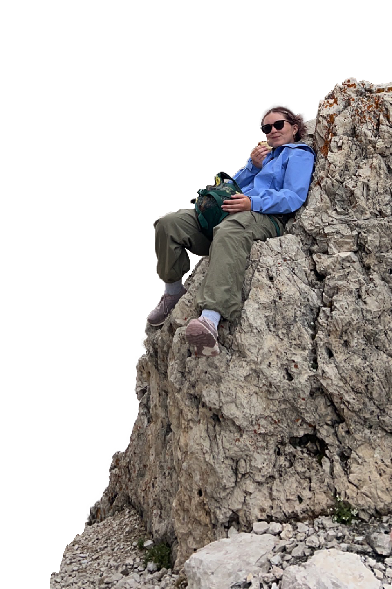

Welcome to the LAB~
Hello! My name is Raya and I'm a designer. This is my portfoio, and as you can see, it's under the works...
Anyways...
Great design does more than communicate. Greater design engages, empowers, and resonates. I’m a designer, storyteller, and full-time sidequester who loves exploring the space where tech, design, and narrative come together.
My fascination with visual storytelling started early. At three, I taught myself to read while exploring the world of the game, Club Penguin. Seeing firsthand how digital worlds can spark curiosity has stuck with me. Today, I aim to create work that starts a conversation, building immersive experiences through branding, digital media, and interactive design.
